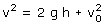
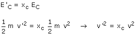
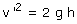
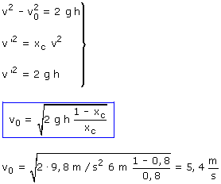

1ª parte La velocidad con que llega la pelota al suelo es:  Datos: h = 6 m, g = 9.8 m/s2 2ª parte En el choque frontal con el suelo se pierde un 20% de energía cinética luego se conservará el 80%  Datos: xc = 0.80 3ª parte La pelota sube hasta la altura desde la que se lanzó:  Combinando las expresiones obtenidas en cada una de las tres partes resulta un sistema con tres incógnitas: v0, v, v':  |